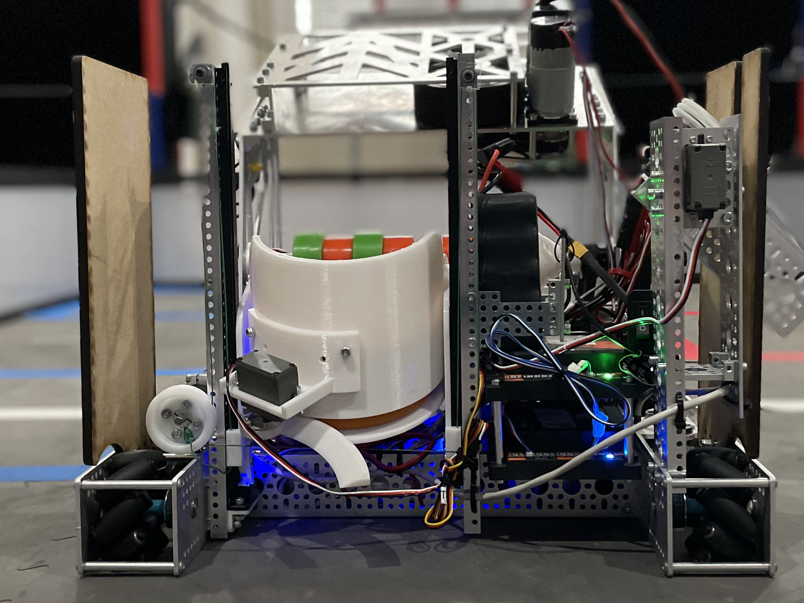
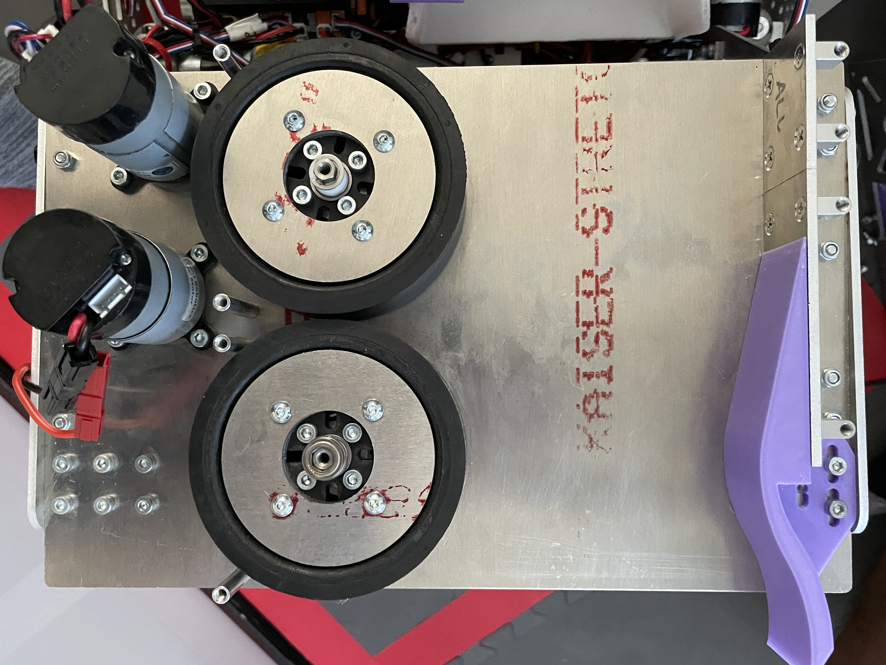

Happy New Year and welcome to the Post-Meet 2 Newsletter! During meet 2, we had a lot of successes but also a lot of failures we are working to improve upon. All of these things will be detailed in the text below. Just like last time, we will include a summary at the bottom so if you don't have time to read the whole newsletter just watch the match video and read the summary. This one is fairly long so if you want to skip the technical jargon or the team changes feel free to do so. Enjoy :)
Meet 2 Robot Recap
Instead of going for a new design with the meet 2 robot, we focussed on redesigning the current modules in a way that made them better for optimization in the future. Although we hoped that this would translate to better performance out of the gate, that turned out to not be the case due to a lack of real-world testing and driver practice (more on that later). Overall, the design was still a step in the right direction as it has been streamlined in a way that will help us revise it in the future. Since we summarized what every module does in the last newsletter, we are just going to go over changes here and fully explain the wobble goal mechanism which is the only brand new piece of the robot.
Intake
The Intake saw the most visually apparent redesign on the robot. Based on what we learned from our meet 1 intake, we decided it was best to start from scratch and try to make the module as streamlined as possible. Although it had its own flaws and overall didn't perform much better than the initial one, it is a significantly better platform to improve on and we've discovered some minor alterations that should solve its issues with enough testing. The module itself has less total parts, less unique parts, and less moving parts than the original which should make these alterations much easier than they would've been on the original mechanism. This design had a few mistakes in CAD that restricted the time we had to test and refine it in the real-world leading to the issues we encountered. With that said, we do have hope that with more testing (which we have full intentions to do) it will become much faster and more reliable than it has been previously.
Wobble
The Wobble mechanism was the only brand new module added to the robot for this meet and will likely be the last of the season. Although things will be redesigned and improved upon, any module on the robot currently is unlikely to be removed entirely since each serves a specific purpose in accomplishing tasks to play the game. Anyways, the wobble mechanism is incredibly simple but its purpose is harder to explain. Simply put, it's a claw on a servo-powered stick that is meant to pick the wobble goals up off the ground, move across the field, and eventually lift them over the field perimeter and deposit them in the "drop zone". The match video does a much better job of displaying this than I do so I recommend watching that for a better understanding. The module and task are very simple but earn a very significant amount of points during both the autonomous and driver-controlled period making it a late but important addition to the robot. While it did serve its purpose at this meet, it had some reliability issues where the clasp would close and not reopen. Therefore, we have a temporary fix for it that we will use at least for the next meet and potentially an entirely new design further down the road. Overall, however, it worked well for a first-generation design and it was designed by one of our sophomores (Alex Madruga) making its success even more exciting.
Transfer

Following the theme of streamlining pre-existing designs, the transfer was overhauled to be much simpler than it was previously. Since this module wasn't mentioned in the last newsletter due to excessive length, I'll give you a brief rundown of it here. The module is called the transfer because it moves the rings between the intake and the shooter. While it is conceptually simple as just a bucket and a drawer slide that vertically moves up and down, it has proven to need a lot of real-world refinement. Since the first iteration, we've found that predicting how the rings will fall into it and bounce while the robot is moving is incredibly difficult and has to be accommodated for within the design. Therefore, one of our more experienced designers (Alex Eum) redesigned the module to allow for more variability and customization and was overall able to reduce the footprint and mount it in a more stable position than the original. While it was a surefire improvement over the original, we still had issues with rings getting stuck in places we least expected like under the intake ramp and the bucket itself. Therefore, we still have some fixes in the works to make the transfer more reliable in that aspect as well as making it faster by adding physical limits ensuring that it is always properly aligned with both the intake and the shooter when necessary. This will take some load off of the drivers and allow them to focus more on the difficult task while this does its work in the background. If you haven't seen the transfer in action yet, be sure to watch for the back part of the robot moving up and down and it'll make more sense.
Shooter

With the shooter being the most consistent module of meet 1, only 3 major changes were made to it between this meet and last in an effort to get it faster and more consistent. First, we revised the guide on the left side of the module in order for the rings to have a more consistent compression and gradual release as they travel through the shooter. Second, we added small metal disks to the top and bottom of each wheel(as shown in the picture) to create more inertia while the wheels are spinning at high RPMs. This allows for faster and more consistent shots as the wheels are less affected by the ring's friction. Think of it as if you were trying to drive a large truck: it takes slightly more work to get up to speed but it is much harder to slow down than a traditional car due to the added weight. Finally, we expanded the gap between the floor and ceiling of the shooter to allow for more variability with the height of the transfer module. While that did help us become faster while using the transfer, we believe it also may have caused more inconsistency in the shots themselves. Therefore, for meet 3 we are working to improve the consistency of the shooter now that the speed has increased. We believe that the added ceiling and new guide are causing the rings to bend making the shots unpredictable. Therefore, we are testing several different solutions to allow for the benefits of the previous revisions to remain while mitigating the accuracy issues they caused.
Autonomous
A major contributing factor to our score improvement from meet 1 was an improved autonomous program. Although we had issues with the odometry pods both on the hardware and electrical front a week before the competition, we got them resolved just in time for the software team to program. In order to fix these issues, edits were made that ensure that no parts of the assembly can come loose over time in turn increasing the durability and reliability of the design. The auto overall worked as intended with the added wobble goal task causing the increase in points over meet 1. Now that we are capable of scoring a sufficient amount of points in the autonomous period, our main focus now is consistency which we've had issues with due to a lack of testing. Therefore, our peak auto score likely won't go up much but the consistency in which we are hitting that score is expected to be over 90%. The video for this section shows an up-close video of just the wobble goals being placed autonomously so be sure to watch that for more clarity.
Match Video
Just like last time, here is our best match video of meet 2 where we scored 124 points! It took us almost the entire day to find the right position on the field to shoot from so we were very excited when we finally did. If there's anything mentioned above or in the video that you don't understand here is the challenge video. The primary focus for future meets is consistency rather than points but we should see a point increase as well. As the saying goes, practice makes perfect; we do indeed need practice. More practice and more testing are quickly becoming the core of our development plan and we should see improvement because of it. If you have any questions about how our robot works or anything about the game in general feel free to contact us!
Post-Meet 2 Team Changes
This is a new section to the newsletter where we are going to discuss specifically changes in the internal operations of the team rather than our typical robot and outreach updates. As a young team, making changes based on the actions we take and the mistakes we make is incredibly important to ensure that we are successful. Without change, a team like us will never get better since we have minimal mentor involvement and key members graduating every year. Therefore, this section will hopefully keep us accountable to ensure that we are improving our practices over time. Although the changes happening between meet 2 and 3 are few in number, they are incredibly important to ensuring that our work is sustainable and on schedule.
First let's address the schedule: Jira worked perfectly in terms of keeping the team on a schedule but at the end of the day we still missed the final deadline before the meet. Due to a scheduling oversight and minimal communication between hardware and software committees, an absolute deadline for the robot hardware to be completed was never decided. Therefore, the hardware committee just kept working and the software team had an insufficient amount of time to program and test the robot. In order to solve this in the future, we are planning two new systems: inter-committee meetings and a build schedule. In terms of meetings, we are having at least one meeting a week that consist of both hardware and software members in order to ensure everyone is on track and all questions either committee has about the other's work is answered. This will save a lot of time and confusion allowing us to ensure that no one is waiting for someone else's job to be done. The build schedule, on the other hand, is simply just something we overlooked. From now on, we are going to schedule the actual construction of the robot day by day once parts arrive to ensure that it is built with enough time for thorough testing, driver practice, and programming. These changes should help us make sure that no time is wasted and help with our goal of more consistency by ensuring more time for testing.
One daunting question I've been asked a lot over the years is what do you do when a senior graduates? Who is going to fill their roles? That is where the term sustainability comes in in FIRST. Since all FIRST teams have a regular cycle of incoming and graduating students, figuring out how your team is going to train new members to replace old ones in a cyclical manner is incredibly important. Doing this has been hard for us this year as we are brand new and with COVID we've had difficulty employing typical training practices we'd use in a full-attendance build space. Therefore, we are just now making our first big step in working on sustainability: drive team! For those of you unfamiliar with FIRST, being on the drive team is one of the most coveted positions as you get to deal with the robot hands-on, drive it in competitions, and get to meet all sorts of people from other teams while competing with them. If you're on drive team, you are one of your team's MVPs on competition day. Part of the reason getting this position is so difficult is dedication. The drive team functions as the core of the entire team making the dedication of those members essential to the rest of the team's success. Since you are one of the only people dealing with the robot hands-on on competition day, you have to be able to fix it on the fly and work with other teams to coordinate a strategy between your robot and theirs. This creates a need for each member of the drive team to be able to communicate and strategize with complete strangers. Because of this, young members have to be trained to be on drive team in order to be compliant enough to work their way out of the worst situations. To help ease these growing pains, we are planning on having an upperclassman as a coach and three lowerclassmen as driver 1, driver 2, and human player. This will allow us to have young members learn from one of our team's best strategists in real competition scenarios. In order to get these members on drive team, we are having tryouts in the near future where underclassmen members are going to come to the build space, learn about the robot, and face off in challenges to see who is the best suited for driving and working in high-pressure scenarios. It should overall be a lot of fun and will be a great first step for us in terms of sustainability.
Other Meet 3 Updates
Due to this being peak competition season, few new projects have been started in terms of outreach. The First Flight Crew initiative mentioned in the last newsletter is still in the works and we are hoping to get that off the ground in the coming weeks. We are also still building STEM Kits for donations to local food pantries which we've been doing since the start of the summer and we hope to increase the scale of that project in the near future. aside from that, we've been given the opportunity to make FIRST oriented videos for our sponsor SendCutSend! As their first point of contact into the FIRST community, they've asked us if we'd be able to make some videos for their youtube channel to help teams use their service. For teams unfamiliar with designing and manufacturing laser cut parts, there is a pretty significant learning curve so they want us to make videos teaching teams how to utilize its full capabilities. This should be a great opportunity for us to help other teams and widen our reach in the community and we are very excited to get started! We are expecting to have 3 videos sent to them by early March so stay tuned!
Summary
This did end up being quite a long newsletter for a "minor" meet but we had a lot of things to cover! In regards to the robot, most of the changes being made for meet 3 and meet 4 are going to be patches to the current design while we prepare for a fairly significant redesign of several modules between meet 4 and meet 5. Our goal for meet 5 is to have a design that we will use through the League Championship. By having it ready for meet 5, it gives us meet 5 and meet 6 to competition test and refine the robot to ensure that it's consistently performing at its best. On the topic of outreach, we have some major projects in the works that should be up and running soon so be sure to stay tuned! And last but certainly not least, we are extremely excited for our younger members to get more involved and start learning! We've progressed so much as a team just since the start of the season and we can't wait for what lies ahead.
As promised, here is the ultra-condensed summary:
Intake - staying mostly the same other than maitenance to make it more reliable.
Wobble Goal - Being rebuilt for consistency by limiting the points of failure.
Shooter - remaining mostly the same other than changes to the guides to try and restrict variability.
Transfer - upper and lower limit switches added to ensure it's alligned properly with the shooter and a shield added to limit the chance of rings getting trapped inside the robot.
Freshman are gaining a greater role on the team and are beginning training to take Senior's positions!
More outreach projects are coming to fruition and should be in action in the near future.
Our scheduling system is being revised to remove the chance of procrastination while building the robot
As always, thank you to our sponsors, family, friends, and mentors for your everlasting support. None of this would have been possible without you! Your support allows us to improve as not only a team but develop as individuals as well. This is an experience that most kids don't get and we are forever thankful to have this oppurtunity.